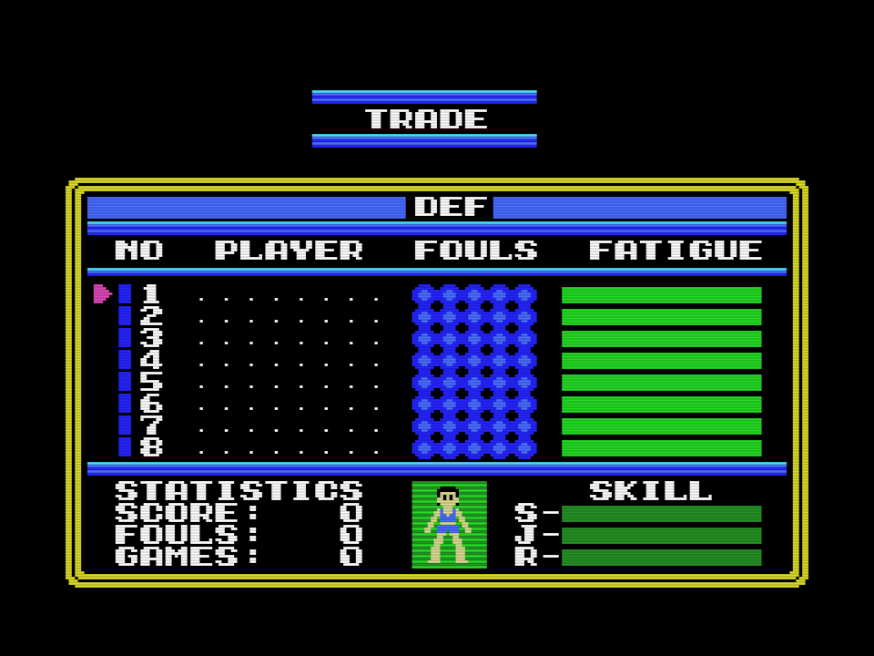

parche/dunkshot_msx2.ips: 292 bytes, 164 bytes of the cartridge changed in 24 stretches. On an MSX2 it puts the game in SCREEN 4, eight sprites per line, and shows only the table sorted by depth (The flicker). On an MSX1 the same file plays as the original.
SCREEN 4 (mode G3) is SCREEN 2 with sprites in mode 2: same pattern, name and colour tables, so the game's graphics need no change. Three things differ:
Below the 16 KB of an MSX1 the game leaves only 0x3C00-0x3FFF unused (the sprite patterns end at 0x3BBF), so: colours at 0x3C00-0x3DFF, attributes at 0x3E00, and the second table the MSX1 alternates at 0x3F00. On an MSX1, R5 = 0x7C or 0x7E points at those two tables; on an MSX2, R5 is always 0x7F and the VDP shows 0x3E00 both frames, the list sorted by depth of 0xE7B0, from which the colours are taken. No pattern moves.
0x5036: jp INIGRP goes to a hook in the 0xFF filler at 0xBFD4: after INIGRP, ATRBAS = 0x3E00 and R5 = 0x7C; if the BIOS is an MSX2's (byte 0x002D), also R0 = 4 and R5 = 0x7F.0x5B7B: xor 4 becomes xor 1: the alternation is 0x3E00 / 0x3F00. Its WRTVDP (0x5B82) goes through 0xBFF3, which on an MSX2 always writes 0x7F. 0x5B9B compares with 0x3E, the table congela_sprites leaves showing.0x5BE6, 0x5BF2: the two copies per frame go to 0x3E00 and 0x3F00; the second continues at 0x7AAE with the colour table: the 32 colours of the sorted list at 0xE7B0, 16 bytes each, to 0x3C00 with out and interrupts off (0x6EA0). On an MSX1 it returns at once.0x5BFB, 0x7374, 0x8057: the ends of the list write 0xD0 and, in the next entry, 0xD8 (0x6EC9).0x5063, 0x804C, 0x80D5, 0x80DC: 0x1B00 and 0x1B10 become 0x3E00 and 0x3E10.0x80CE: the end of viste_jugador, the sample figure of the team cards and of TRADE, jumps to 0x6F30: it reads the eight attributes back from VRAM and fills their colours, so the figure keeps its skin, hair and shirt on an MSX2 too.
In the 0xFF filler at 0xBFD4-0xBFFD and in three orphan routines of the cartridge that nobody calls (0x6EA0, 0x6F30, 0x7AAE), found when the disassembly was traced. Their listing is parche/parche_msx2.asm; the original code around every patched byte is in src/dunkshot.asm.
| piece | address | bytes |
|---|---|---|
| hook after INIGRP | 0xBFD4 | 31 |
| register 5 by machine | 0xBFF3 | 11 |
| sprite colour table | 0x6EA0 | 38 |
| end of list, 0xD0 and 0xD8 | 0x6EC9 | 14 |
| colours of the sample figure | 0x6F30 | 22 |
| second copy and colours | 0x7AAE | 9 |